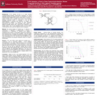
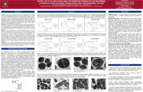
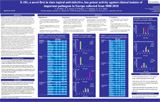
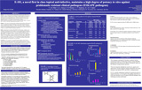
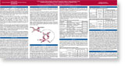
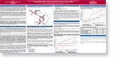
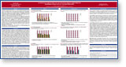
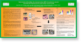
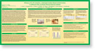

Myeloperoxidase and Eosinophil Peroxidase Inhibit Endotoxin Activity and Increase Mouse Survival in a Lipopolysaccharide Lethal Dose 90% Model
Robert C. Allen,1 Mary L. Henery,2 John C. Allen,2 Roger J. Hawks,3 and Jackson T. Stephens Jr.
Journal of Immunology Research
Volume 2019, Article ID 4783018, 10 pages
https://doi.org/10.1155/2019/4783018
Mechanism of Microbicidal Action of E-101 Solution, myeloperoxidase-Mediated Antimicrobial, and Its OxidativeProducts
Gerald A. Denys, Neil C. Devoe, Polyxeni Gudis, Meghan May, Robert C. Allen, Jackson T. Stephens, Jr.
E-101 solution is a first-in-class myeloperoxidase-mediated antimicrobial developed for topical application. It is composed of porcine myeloperoxidase(pMPO), glucose oxidase (GO), glucose, sodium chloride, and specific amino acids inan aqueous solution. Once activated, the reactive species hydrogen peroxide (H2O2), hypochlorous acid, and singlet oxygen are generated. We evaluated the treatment effects of E-101 solution and its oxidative products on ultrastructure changes and microbicidal activity against methicillin-resistant staphylococcus aureus(MRSA) and escherichia coli. Time-kill and transmission electron microscopy studies were also performed using formulations with pMPO or GO omitted. The glutathione membrane protection assay was used to study the neutralization of reactive oxygen species. The potency of E-101 solution was also measured in the presence of serum and whole blood by MIC and minimal bactericidal concentration (MBC) determinations.E-101 solution demonstrated rapid bactericidal activity and ultracellular changes in MRSA andE. Coli cells
INHIBITORY EFFECT OF WHOLE HUMAN BLOOD ON THE ANTISEPTIC ACTION OF E-101 SOLUTION, A MYELOPEROXIDASE-MEDIATED FORMULATION, COMPARED TO CONVENTIONAL WOUND CLEANSERS
E-101 Solution (E-101) is a first-in-class topical myeloperoxidase-mediated formulation developed as an antimicrobial open wound wash solution. It is composed of two enzymes, glucose oxidase (GO) and porcine myeloperoxidase (pMPO) in an aqueous vehicle. Upon topical application of E-101 solution containing glucose, hydrogen peroxide (H2O2) is produced in situ by GO that drives pMPO-dependent oxidation of chloride to hypochlorous acid (HOCl). Once generated, HOCl (or its conjugate base OCl- (pKa = 7.5) participates in a diffusion controlled reaction with a second H2O2 molecule to yield singlet molecular oxygen (1O2), a metastable electronically excited reactant with a microsecond lifetime (Figure 1). The present study was conducted to measure the performance of E-101 to three predicate antimicrobial solutions in the presence of human blood and blood products
G. A. Denys1, J.L. Carpenter1, R.C. Allen2, and J. T. Stephens, Jr.3
1Indiana University Health Pathology Lab, Indianapolis, IN;
2Creighton University, School of Medicine, Department of Pathology, Omaha, NE,3Exoxemis, Inc, Little Rock, AR
Exoxemis’ scientific team members are active contributors to the field’s body of knowledge in myeloperoxidase (MPO) technology. The ppublications and presentations listed below represent a partial list.

Abstract 23B
11th American Society for Microbiology Conference
on Candida and Candidiasis
San Fransisco, CA
May 29-April 2, 2012
E-101 Solution, a First in Class Topical Anti-infective, Shows Fungicidal Activity In Vitro against Candida species
E-101 solution (E-101) is a novel cell-free myeloperoxidase-mediated antimicrobial developed for topical application directly into surgical wounds. It is composed of 1)porcine myeloperoxidase (pMPO)and glucose oxidase (GO), 2) glucose, 3) sodium chloride, and 4) specific amino acids. Once activated, hydrogen peroxide is produced in situ by GO dehydrogenation of glucose and reduction of oxygen. The pMPO-catalyzed oxidation of chloride by hydrogen peroxide generates hypochlorous acid. Once generated, hypochlorous acid reacts in a diffusion-controlled reaction with a second hydrogen peroxide molecule to yield singlet oxygen. Thein vitro fungicidal activity of E-101 against Candida spp and other yeast-like organisms was investigated.
G.A. Denys1, R.C Allen2, P. O’Hanley3, J.T. Stephens, Jr.3
1Indiana University Health Pathology Lab, Indianapolis, IN;
2Creighton University, School of Medicine, Department of Pathology, Omaha, NE,3Exoxemis, Inc, Little Rock, AR

Abstract #1453
21st European Congress of Clinical Microbiology
and Infectious Diseases and 27th International
Congress of Chemotherapy
Milan, Italy
May 7-10, 2011
Effect of E-101 Solution and Its Oxidative Products on Microbial Ultrastructure Changes associated with Microbicidal Action
E-101 Solution (E-101) is a novel cell free myeloperoxidase-mediated antimicrobial developed for topical application directly into surgical wounds. It is composed of 1) porcine myeloperoxidase and glucose oxidase, 2)Glucose, 3) sodium chloride, and 4) specific amino acids. Once activated, hydrogen peroxide is produced in situ by GO dehydrogenation of glucose and reduction of oxygen. The MPO-catalyzed oxidation of chloride by hydrogen peroxide generates hypochlorous acid. Once generated, hypochlorous acid reacts in a diffusion-controlled reaction with a second hydrogen peroxide molecule to yield singlet oxygen. We evaluated the treatment effects of E-101 and its oxidative products on ultrastructure changes and microbicidal activity against methicillin-resistant Staphycoccus aureus (MRSA) and Escherichis coli.
G.A. Denys1, M.P Goheen1, R.C.Allen2 P. O’Hanley3, J.T. Stephens, Jr.3
1U Health pathology Laboratory, Indianapolis,IN
2Creighton Univ Medical Ctr., Omaha,NE
3Exoxemis, Inc, Little Rock, AR
Download Poster >>

Abstract #1143
21st European Congress of Clinical Microbiology
and Infectious Diseases and 27th International
Congress of Chemotherapy
Milan, Italy
May 7-10, 2011
E-101, a novel first in class topical anti-infective, has potent activity against clinical isolates of important pathogens in Europe collected from 2008-1010
E-101 is a novel topical antimicrobial developed in Europe for the prevention of surgical site infections (SSI). Its unique mechanism of action utilizes myeloperoxidase (MPO) to produce reactive oxygen species that kill bacteria locally, . As with any new agent, it is important to understand its current activity profile and to monitor for changes in that profile that may indicate the emergence of resistance. This study reports the in vitro activity of E-101 against European isolates of SSI pathogens alongside key comparators (currently utilized agents and important phenotypic markers).
C.M. Pillar 1G.A. Denys2, P. O’Hanley3, J.T. Stephens, Jr.3, D.F. Sahm1
1Eurofins Medinet, Chantilly, VA
2Indiana Univ. Health Pathology Laboratory, Indianapolis, IN,
3Exoxemis, Inc, Little Rock, AR

Abstract #1143
21st European Congress of Clinical Microbiology
and Infectious Diseases and 27th International
Congress of Chemotherapy
Milan, Italy
May 7-10, 2011
E-101, a novel first in class topical anti-infective, maintains a high degree of potency in vitro against problematic resistant clinical pathogens (ESKAPE pathogens)
.
E-101, a topical anti-infective which utilizes myeloperoxidase (MPO) for the generation of reactive oxygen species to kill bacteria, is being developed for the prevention of surgical site infections. Infections caused by antibiotic resistant pathogens have become common and are increasingly difficult to treat. This study evaluates the activity of E-101 against highly resistant “ESKAPE” pathogens (vancomycin resistant E. faecium [VRE], methicillin resistant S. aureus [MRSA], extended spectrum b-lactamase [ESBL]/carbapenemase producing K. pneumonia, multi-drug resistant [MDR] A. baumannii and P. aeruginosa, and AmpC cephalosporinase producing E. cloacae).
C.M. Pillar 1G.A. Denys2, P. O’Hanley3, J.T. Stephens, Jr.3, D.F. Sahm1
1Eurofins Medinet, Chantilly, VA
2Indiana Univ. Health Pathology Laboratory, Indianapolis, IN,
3Exoxemis, Inc, Little Rock, AR

Poster # C-2061
American Society for Microbiology 110th General Meeting
San Diego, CA
May 23-27, 2010
E-101 Solution Demonstrates Antiviral Properties Against Herpes Simplex Virus, Human Immunodeficiency Virus, and Human Influenza A/H1N1 Virus
E-101 Solution is a novel myeloperoxidase-based topical antimicrobial that generates the local production of singlet oxygen and hypochlorous acid. It is composed of 1) porcine myeloperoxidase (pMPO) and glucose oxidase (GO); 2) glucose, which is the substrate for GO; and 3) specific amino acids that stabilize the enzymes once the system has been activated after mixing all of the components. The purpose of this study is to determine the in vitro antiviral efficacy of E-101 Solution against prototype viral strains that cause major unmet public health problems.
G.A. Denys1, V. Dzyakanava2, P. O’Hanley3, and J.T. Stephens, Jr.3
1Clarian Pathology Laboratory, Indianapolis, IN;
2Bioscience Laboratories, Inc.; Bozeman, MT;
3Exoxemis, Inc.; Little Rock, AR

Poster # C-2061
American Society for Microbiology 110th General Meeting
San Diego, CA
May 23-27, 2010
E-101 Solution, a Novel Antiseptic Intended for Direct Application Within a Surgical Wound to Prevent Surgical-Site Infection: Blinded, Controlled Phase 1 Skin-Irritation Study in Healthy Adult Volunteers
E-101 Solution is a novel antimicrobial agent being developed by Exoxemis, Inc. It is formulated to mimic the host�s innate defense against microbes by generating myeloperoxidase endproducts. E-101 Solution consists of 2 active ingredients: glucose oxidase, derived from Aspergillus niger, and p-MPO. The enzymatic activity of glucose oxidase produces a steady state of hydrogen peroxide that is critical for p-MPO to continuously generate its end-products, hypochlorous acid and singlet oxygen. These myeloperoxidase end-products are extremely efficient in killing microbes on contact.
Peter O’Hanley, PhD, MD, MPHa; Christopher Beausoleil, CCRPb; Kelly O’Hanley, MD, MPHa; Jackson T. Stephens Jra
aExoxemis, Inc., Little Rock, AR; bBioScience Laboratories, Inc., Bozeman, MT

Paper #C1-095
49th Annual ICAAC Meeting
San Francisco, CA
September 12-15, 2009
In vitro and in vivo activity of E-101 solution against acinetobacter baumannii strains from U.S.military personnel
Acinetobacter baumannii (Ab) is an important pathogen among military personnel injured while deployed overseas. These isolates are highly resistant, with limited treatment options. E-101 Solution (E-101) is a novel drug product containing porcine myeloperoxidase (pMPO), glucose oxidase, and their respective substrates, and represents a new class of broad-spectrum antimicrobial for the prevention and treatment of localized infections. Its unique mode of action relies on the local production of singlet oxygen. The aim of this study was to evaluate the in vitro activity and the in vivo efficacy of E-101 against Ab.
J.C. Davis1, G.A. Denys2, J.T. Stephens, Jr.3
1Ricerca BioSci., Concord, OH
2Clarian Pathology Lab, Indianapolis, IN
3Exoxemis, Inc., Little Rock, AR
Poster A-024 presented at:
the American Society for Microbiology General Meeting
Philadelphia, PA
May 17-21, 2009
Antimicrobial Activity of E-101 Solution, A New Myeloperoxidase-Based Antimicrobial Agent Versus Mupirocin against Staphylococcus aureus Phenotypes
Staphylococcus aureus is a leading cause of infections in hospitals and other health care settings in the United States and has developed resistance to a broad-spectrum of antibiotics commonly used to treat it. Wound site infections including surgical site infections caused by S. aureus remain a major source of morbidity and mortality (2). Patients usually become rapidly colonized with S. aureus from the exogeneous environment or their own skin flora as the source of infection.
The purpose of this study was to determine the in vitro activity of two topical agents E-101 compared to mupirocin against different phenotypes of S. aureus from diverse geographical locations. Because there are no interpretive breakpoints for E-101, mupirocin was tested for comparative purposes only.
G.A. Denys1, P. Grover2, C. Pillar2, J.T. Stephens, Jr.3
1Clarian Pathology Laboratory, Indianapolis, IN
2Eurofins Medinet, Anti-Infective Services, Chantilly, VA
3Exoxemis, Inc., Little Rock, AR

Poster P2308 presented at:
American Academy of Dermatology 2009 Annual Meeting
San Francisco, CA
March 6-10, 2009
Determination of the Effects of a Myeloperoxidase (MPO) Formulation on Wounds Inoculated With Staphylococcus Aureus Using a Porcine Model
Myeloperoxidase (MPO) is an enzyme that plays a central role in mammalian antimicrobial defense, including eliminating bacteria from skin wounds. Staphylococcal species are estimated to affect more than 70% of human skin wounds due to their high prevalence and resistance to antimicrobial treatments. This research was conducted to investigate the ability of an MPO-containing formulation to combat Staphylococcus aureus infection.
A porcine deep partial-thickness wound model was used in the study. Wounds were inoculated with S aureus and then treated with high- or low-concentration MPO formulations. Wounds also were treated with placebo, saline, and mupirocin, which served as a positive control, and untreated wounds served as a negative control. Treatment with the MPO formulations reduced the challenge organisms by 3 log CFU/mL compared with the 8 log CFU/mL recovered from the untreated, placebo, and saline groups (P <.01). These results indicate that MPO-based drug products may be beneficial in preventing or treating bacterial infections in deep partial-thickness wounds.
R. Pereza, Y. Rivasa, J. Gila, J. Valdesa, S. Becquerelleb, O. Abril-Hörpelb, S. Davisa
aUniversity of Miami, Miller School of Medicine, Department of Dermatology and Cutaneous Surgery, Miami, FL
bExoxemis, Inc., Little Rock, AR.
Paper#: A1-3497
48th Annual ICAAC� / IDSA 46th Annual Meeting
Washington, DC
October 25-28, 2008
Myeloperoxidase Shows Selective Bacterial Binding
R.C. Allena, J.T. Stephens, Jrb
aCreighton University, School of Medicine, Omaha, NE. bExoxemis, Inc., Little Rock, AR.
Paper#: C1-3884
48th Annual ICAAC� / IDSA 46th Annual Meeting
Washington, DC
October 25-28, 2008
In Vitro Characterization of E-101 Solution, a Myeloperoxidase-Based Antimicrobial Agent
G. Denys, S. Becquerelle, W. Haag, O. Abril-Horpel, S. Hamburger

Paper#: F1-3956
48th Annual ICAAC� / IDSA 46th Annual Meeting
Washington, DC
October 25-28, 2008
Efficacy of E-101 Solution, a Myeloperoxidase-Based Antimicrobial, in Different Rat Localized Wound Infection Models
J. Clark, S. Becquerelle, G. Denys, A. Robins, W. Haag, S. Woodhead, O. Abril-Horpel, S. Hamburger
Paper#: F1-3957
48th Annual ICAAC� / IDSA 46th Annual Meeting
Washington, DC
October 25-28, 2008
E-101 Solution Effectively Reduces Pseudomonas aeruginosa in a Rat Heat-Induced Necrosis Model
S. Becquerelle, J. Clark, G. Denys, W. Haag, S. Woodhead, O. Abril-H�rpel, S. Hamburger
“Efficacy of the Myeloperoxidase Enzyme System in a Rat Dermal Model for the Prevention of Surgical Site Infection”.
Robins, A1; Denys, G2; Woodhead, S3; Davis, J4; Abril-Horpel, O ;Becquerelle, S; Haag, W; Valvani, S; Bond, J ; Medinsky, M.
1University of Washington, Seattle, WA, 2Clarian Health Partners, Inc., Indianapolis, IN, 3Ricerca Biosciences, Concord, OH, 4Exoxemis, Inc., Little Rock, AR
Poster # 1379 presented at Orthopaedic Research Society Conference, Washington, DC, February 20 � 23, 2005
Surgical site infections (SSI) are a major source of morbidity and mortality, and add significant cost to healthcare. An oxidant generating enzyme system containing myeloperoxidase (MPO) has been developed as a new topical/local product to prevent SSI (Exoxemis, Inc., Little Rock, AR). In vitro, the MPO enzyme system is rapidly microbicidal against a broad range of microorganisms, even in the presence of metal implant material. In this study, a rat dermal model has been developed to evaluate the in vivo efficacy of the MPO enzyme system for the prevention of surgical site infection.
“Animal safety profile of pure and formulated porcine myeloperoxidase”
James Bond, Michele Medinsky, Shri Valvani, William Haag, Sophie Bequerelle, Gerald Denys, Obsidiana Abril-Hörpel
Exoxemis, Inc., Little Rock, AR
Poster # 29-5P2 4th International Peroxidase Meeting, Kyoto, Japan
October 27-30, 2004
A cell free oxidant generating system containing porcine myeloperoxidase (MPO) has been developed as a local/topical antimicrobial. The MPO system is rapidly microbicidal against a broad range of bacteria, fungi, spores, and viruses in vitro, and demonstrates rapid decrease in bacterial challenge after application onto wounds in vivo. Excellent efficacy of the MPO system both in vitro and in vivo led us to investigate the safety profile of the pure and formulated MPO. Studies were conducted in rats and rabbits to investigate the safety of pure and formulated MPO. The studies included 14 day oral, dermal and pulmonary toxicity testing and 72 hour dermal and ocular irritation testing. The results showed that pure and formulated MPO were non-toxic in oral, dermal and pulmonary tests and non-irritating to the eyes. In dermal irritation tests, a slight and transient erythema reaction in 1/3 rabbits cleared within 24 hours.
Bactericidal Activity of the Myeloperoxidase Antimicrobial Enzyme System Against Vegetative and Spore Forms of Bacillus cereus, Bacillus thuringiensis, and Bacillus subtilis”
S. Woodhead1, G. Hill2, S. Valvani2, O. Abril-Horpel2, W. Haag2, S. Becquerelle2, G. A. Denys3
1Ricerca Biosciences, 2Exoxemis, Inc., Little Rock, AR, 3Clarian Health Partners, Inc.
Paper#: 56(G) accepted for 2004 ASM Biodefense Research Meeting, Baltimore, MD, March 7 – 10, 2004.
The emergence of new infectious diseases, rise in antibiotic resistance, and threat of bioterriorism and biowarfare have prompted the development of alternative treatment options to antibiotics. A novel enzyme system utilizing myeloperoxidase (MPO) as a potent antimicrobial agent has been developed (Exoxemis, Inc. Little Rock, AR). A study has been performed to investigate the in vitro action of the MPO enzyme system on vegetative and spore forms of Bacillus species closely related to Bacillus anthracis, specifically Bacillus cereus ATCC 10987, Bacillus thuringiensis ATCC 33679, and Bacillus subtilis ATCC 19659. The MPO enzyme system demonstrated rapid and potent bactericidal activity against Bacillus spores (100% kill within 120 minutes) and shows promise for the prevention of anthrax and other infections which may be caused by biowarfare agents.
“Comparison of the Activity of Myeloperoxidase (MPO) Enzyme System to Antibiotics for Irrigation of Implant Material”
Robins A1, Woodhead S2, Denys G3
1University of Washington, 2Ricerca Biosciences, 3Exoxemis, Inc.
Poster # 1061 accepted for Orthopaedic Research Society Conference, San Francisco, CA, March 7 – 10, 2004.
Residual bacteria at the site of implant surgery can lead to acute and delayed infection. Intra-operative irrigation with antibiotic solutions during implant surgery is common clinical practice despite the lack of evidence of sustained reduction or elimination of residual bacteria at the surgical field. A novel enzyme system utilizing myeloperoxidase (MPO) as a potent antimicrobial agent has been developed (Exoxemis, Inc. Little Rock, AR). The MPO enzyme system exhibited rapid and complete kill of residual S. aureus, even in the presence of implant material. The antibiotic solutions failed to do so and, in fact, showed re-growth of the initial inoculum.
“Microbicidal Activity of the Myeloperoxidase Enzyme System Against Clinically Relevant Bacterial and Fungal Isolates Including Multidrug-Resistant Strains”
Woodhead S1, Denys G2, Harrell L3, Hill G4, Valvani S4, Abril-Horpel O4, Haag W4
1Ricerca Biosciences, 2Clarian Health Partners, Inc., 3Duke University Medical Center, 4Exoxemis, Inc.
The Interscience Conference on Antimicrobial Agents and Chemotherapy (ICAAC). 43rd ICAAC, September 14 – 17, 2003, Chicago, Illinois. Poster #: F-1458.
A novel enzyme system utilizing myeloperoxidase (MPO) as a potent antimicrobial agent has been developed (Exoxemis, Inc. Little Rock, AR). A study has been performed to investigate the in vitro activity of the MPO enzyme system against a broad spectrum of bacterial and fungal isolates implicated in serious infections. The MPO enzyme system demonstrated rapid and potent microbicidal activity against a broad spectrum of bacterial and fungal isolates, and may have prophylactic and therapeutic applications.
“Resistance Selection Studies with the Myeloperoxidase Enzyme System Against Staphylococcus aureus, Enterococcus faecium, and Pseudomonas aeruginosa”
Denys G1, Woodhead S2, Becquerelle S3, Valvani S3, Abril-Horpel O3, Haag W3
1Clarian Health Partners, Inc., 2Ricerca Biosciences, 3Exoxemis, Inc.
The Interscience Conference on Antimicrobial Agents and Chemotherapy (ICAAC). 43rd ICAAC, September 14 – 17, 2003, Chicago, Illinois. Poster # F-353.
Myeloperoxidase (MPO) plays an important role in the natural host defense system against pathogenic microorganisms. A novel enzyme system utilizing myeloperoxidase (MPO) as a potent antimicrobial agent has been developed (Exoxemis, Inc. Little Rock, AR). To assess the potential for emergence of resistance in clinical use, the selection of resistance was investigated by in vitro serial passage. The MPO enzyme system did not select for resistant variants in S. aureus, E. faecium, and P. aeruginosa. These results suggest that the MPO enzyme system with its unique mechanism of action does not select for resistance.
“A New Approach for the Prevention and Treatment of Staphylococcal Musculoskeletal Infection”
Robins A1, Woodhead S2
1University of Washington, 2Ricerca Bioscience
Orthopaedic Research Society, New Orleans, LA, February 2 – 5, 2003.
Poster #1062
Staphylococcus aureus (SA) and coagulase-negative staphylococci (CNS) are the most frequent cause of musculoskeletal infections. Emerging resistance among these organisms to traditional antimicrobial agents makes the management and prevention of infection difficult. A novel enzyme system utilizing myeloperoxidase (MPO) as a potent antimicrobial agent has been developed (Exoxemis, Inc. Little Rock, AR). The MPO system demonstrated both rapid action and complete microbicidal activity in vitro, safety in animals tested, and potential for prophylactic and therapeutic applications against problematic microorganisms associated with musculoskeletal infections.
“Physical-Chemical Characterization of Myeloperoxidase (MPO) and Related Degradation Products”
Scandella C1, Cunico RL2, Gruhn V2, Moon J2, House M2, Taylor E2, Jin Y-Q3 and Kiang H3.
1Exoxemis, Inc., 2Bay Bioanalytical Laboratory, 3PHARMout Laboratories
Analysis of Well Characterized Biotechnology Pharmaceuticals, San Francisco, CA. January 7-10 2003.
A physical-chemical study was performed to render porcine MPO a well-characterized biopharmaceutical. MPO was purified to near homogeneity, formulated, and examined by several methods, including reverse phase HPLC (rp-HPLC), UV spectrometry (UV), size exclusion chromatography (SEC) with refractive index (RI) and laser light scattering (LLS) detection, mass spectrometry (MS), and an enzyme activity assay using guaiacol as a substrate. Stability studies on intact MPO for up to two years revealed that the molecule is stable to prolonged storage, even at temperatures up to 40°C.
“Neutrophil Leukocyte: Combustive MicrobicidalAction and Chemiluminescence”
Department of Pathology, Creighton University School of Medicine, Omaha, NE 68131, USA
Correspondence should be addressed to Robert C. Allen; robertallen@creighton.edu
Received 15 August 2015; Accepted 18 November 2015
Neutrophil leukocytes protect against a varied and complex array of microbes by providing microbicidal action that is simple,potent, and focused. Neutrophils provide such action via redox reactions that change the frontier orbitals of oxygen (O2) facilitatingcombustion.
Journal of Immunology Research
Volume 2019, Article ID 4783018, 10 pages
https://doi.org/10.1155/2019/4783018
Research Article
Myeloperoxidase and Eosinophil Peroxidase Inhibit Endotoxin Activity and Increase Mouse Survival in a Lipopolysaccharide Lethal Dose 90% Model.
Robert C. Allen, Mary L. Henery, John C. Allen, Roger J. Hawks, and Jackson T. Stephens